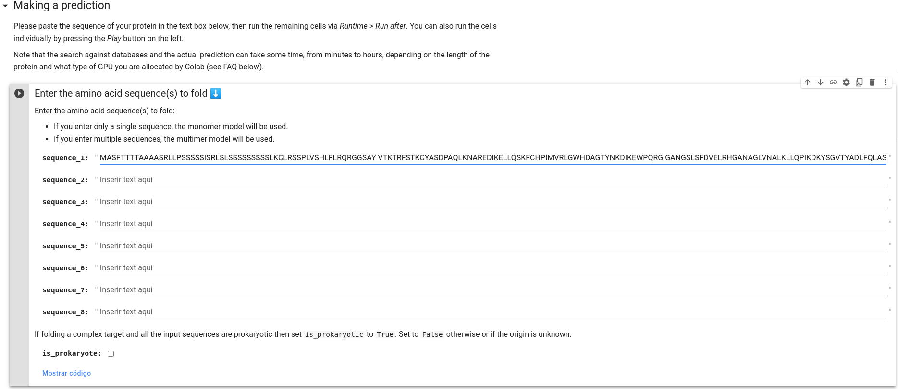

Modelagem Computacional de Proteínas por Métodos usando Inteligência Artificial (AI)
Introdução
Os recursos de aprendizado de máquina e inteligência artificial (Artificial Inteligence - AI) já vêm sendo utilizados há um tempo para otimização de soluções automáticas e não-supervisionadas à área de Bioinformática. Mais recentemente, técnicas de aprendizado profundo (Deep learning) vêm apresentando uma notável performance em outras áreas científicas e aplicadas (Tang et al. 2019), o que intensificou a exploração do potencial dessas técnicas para uso na área de bioinformática estrutural por grupos acadêmicos.
Em 2020, o interesse e o massivo investimento de uma empresa não-acadêmica e com finalidades comerciais nessas duas áreas, Deep Learning e Biologia Estrutural, chamou a atenção da comunidade científica, ao vencer de maneira incontestável, um desafio bienal da área, o CASP (Critical Assessment of Structure Prediction), feito que normalmente era atingido por grupos acadêmicos. Tal empresa, a DeepMind, uma ramificação de AI do Google/Alphabet, construiu uma rede que levou a um fenomenal avanço na predição da estrutura 3D de proteínas a partir de sua sequência de aminoácidos (Callaway, 2020), chamada de AlphaFold2.
Após uma intensa espera por parte da comunidade científica, a publicação do artigo do AlphaFold2 (Jumper et al. 2021) veio com uma grata surpresa: a liberação do código do programa e do modelo utilizado (este último sob a licença CC BY-NC 4.0). No entanto, os recursos computacionais necessários para instalação e execução da ferramenta de forma local não são tão acessíveis, principalmente a grupos acadêmicos e startups da área de bioinformática. Não demorou muito para que tal avanço fosse avaliado e melhorado pela comunidade acadêmica/científica da área, o que expandiu sua acessibilidade e trazendo uma verdadeira popularização da utilização do AlphaFold2 (Callaway, 2021).
No presente tutorial iremos demonstrar como modelos 3D de proteínas podem ser obtidos de forma rápida a partir da sequência de aminoácidos pelas duas ferramentas melhor classificadas no CASP14 e que usam AI em suas abordagens: o AlphaFold2 (Jumper et al. 2021) e o RoseTTAFold (Baek et al. 2021). O objetivo aqui é como obter tais modelos, sejam de forma pronta, ou executar a modelagem a partir da sequência, utilizando os recursos do GoogleColab.
IMPORTANTE: Lembro-lhes que apenas obter computacionalmente um modelo ou a predição da estrutura de uma proteína não é necessariamente um problema científico por si. A obtenção da estrutura é normalmente uma etapa dentro de uma pergunta científica maior. Como sempre ressaltamos, o mais importante em qualquer problema de Bioinformática Estrutural é a pergunta científica que será respondida.
Obtendo modelos prontos do AlphaFold
Como ressaltado anteriormente, a comunidade científica e grandes grupos de Bioinformática do mundo começaram a utilizar o AlphaFold2 e a executar a predição em massa da estrutura 3D de proteínas de diversos organismos modelos. Portanto, o primeiro passo neste tutorial é responder a seguinte pergunta:
"A proteína-alvo que estou interessado em fazer a predição estrutural já foi modelada pelo AlphaFold2?"
A DeepMind, European Molecular Biology Laboratory (EMBL) e o European Bioinformatics Institute (EBI) disponibilizaram em parceria um banco de dados para consultas de proteínas preditas do proteoma completo de diversas espécies-modelos. Tal banco é o AlphaFold Protein Structure Database:

Ao clicar em Downloads no canto superior direito você terá a lista das espécies-modelo que já tiveram o seu proteoma com predição estrutural completa. Vale a pena verificar se a sua proteína-alvo já está modelada. Assim você pode baixar o arquivo .pdb ou .cif e utilizar tal estrutura para prosseguir no seu estudo. Ressalta-se, no entanto, que como o método é automatizado, a sequência da proteína é modelada por completo e regiões clivadas (endereçamento ou de pré/pro-proteínas) ou rearranjos (tipo permutação circular em proteínas do tipo lectinas) podem não ser devidamente identificados. Fique atento a isso.
Clique no primeiro exemplo que aparece Free fatty acid receptor 2 de humanos e vamos verificar a descrição. Na primeira parte, temos a descrição da proteína e os links para download dos arquivos da predição:
Na segunda parte, temos o navegador da sequência de aminoácidos sincronizado com a visualização da estrutura 3D predita. Esta é descrita em cores, de acordo com o pLDDT que é o escore de confiança por cada resíduos (pLDDT), que varia entre 0 e 100, para pior e melhor confiança, respectivamente. Lembrando que, regiões com pLDDT abaixo de 50 devem ser interpretadas com cautela.

Os arquivos de estruturas gerados pelo AlphaFold2 inserem os valores de pLDDT na coluna referente ao B-Factor ou fator de temperatura. Lembre-se sempre disso, pois a interpretação desses dois parâmetros é em sentido inverso. Maiores valores de pLDDT denotam maior qualidade da predição daquele resíduo. Por outro lado, menores valores de B-Factor correspondem a resíduos onde há uma maior certeza da sua adequação a nuvem eletrônica.
Seguindo um pouco mais abaixo na página temos o Predicted Aligned error, que indica indica o erro de posição esperado do AlphaFold no resíduo "x", quando as estruturas previstas e verdadeiras estão alinhadas no resíduo "y".

Como a própria página descreve, tal parâmetro "é útil para avaliar a exatidão inter-domínios" de uma proteína. Você pode obter mais informações clicando no tutorial logo abaixo.
O AlphaFoldDB está também interligado com o banco Uniprot. Portanto, você pode fazer a busca por sua proteína no próprio Uniprot e caso a estrutura relativa aquele registro já tenha sido predita, é só ir na seção Structure na página do registro. Veja, por exemplo, o registro da proteína acima O15552. A vantagem de verificar este registro no Uniprot é que na seção PTM/Processing as regiões clivadas já podem estar descritas.
Modelando a proteína-alvo com o DeepMind/AlphaFold no ambiente GoogleColab
Como descrito anteriormente, o AlphaFold2 foi melhorado pela comunidade científica, recebendo, principalmente, melhorias na forma de realização do alinhamento múltiplo. Isto significa que você pode rodar a versão original do DeepMind ou as versões com contribuições da comunidade. Todas as versões dispensam instalação local do programa, o que pode ser impossível dependendo da infraestrutura computacional a quem tens acesso, e são acessíveis pela plataforma do Google Colaboratory, conhecido como GoogleColab. Uma descrição e introdução inicial do GoogleColab pode ser acessada nesta página, que funciona de forma semelhante ao Jupyter, usando os recursos do Google.
A plataforma tem uso gratuito limitado, tanto por tempo, como por recursos computacionais, e para o seu uso basta ter uma conta do Google. A plataforma tem também a opção de planos pagos que aumentam a memória e o tempo processamento, e também pode rodar localmente (dependendo do código).
Na página do GitHub - deepmind/alphafold você encontrará o link para uma versão simplificada do programa para rodar no GoogleColab. Essa é a mesma versão que roda pelo UCSF ChimeraX (que veremos mais adiante). A exceução entre a versão direta no navegador ou pelo ChimeraX é praticamente a mesma, a diferença fica por conta da visualização posterior.
Pelo GoogleColab
Como proteína-alvo utilizaremos a mesma proteína dos tutoriais anteriores, a enzima L-Ascorbato peroxidase de Spinacea oleracea (APX do espinafre). A sequência a ser utilizada será a da isoforma ligada a membrana do tilacóide (Tb-APX), nos cloroplastos (O46921). Segue a sequência no formato fasta.
>O46921_SPIOL
MASFTTTTAAAASRLLPSSSSSISRLSLSSSSSSSSSLKCLRSSPLVSHLFLRQRGGSAY
VTKTRFSTKCYASDPAQLKNAREDIKELLQSKFCHPIMVRLGWHDAGTYNKDIKEWPQRG
GANGSLSFDVELRHGANAGLVNALKLLQPIKDKYSGVTYADLFQLASATAIEEAGGPTIP
MKYGRVDATGPEQCPEEGRLPDAGPPSPAQHLRDVFYRMGLDDKDIVALSGAHTLGRSRP
ERSGWGKPETKYTKDGPGAPGGQSWTAEWLKFDNSYFKDIKEKRDADLLVLPTDAALFED
PSFKVYAEKYAADQEAFFKDYAEAHAKLSNQGAKFDPAEGITLNGTPAGAAPEKFVAAKY
SSNKRSELSDSMKEKIRAEYEGFGGSPNKPLPTNYFLNIMIVIGVLAVLSYLAGN
Clique aqui para baixar o arquivo .fasta.
Vamos agora aos passos:
-
Abra a página do GoogleColab - DeepMind.
-
Faça o login no Google.
-
Vá em Ambiente de Execução > Alterar o tipo de ambiente de execução, de acordo com as setas abaixo.

-
Altere o tipo de ambiente para GPU. Isto fará com que a execução seja mais rápida e os próprios desenvolvedores recomendam o uso de GPUs, ao invés de CPUs.
-
Role o notebook do Colab até a seção Make a Prediction. Nesta você verificará umas caixas para colar a sua sequência. Cole apenas a sequência acima da Tm-APX no campo "sequence_1", sem adicionar a linha de cabeçalho fasta (a que começa com
>).

-
Se sua proteína-alvo for de um organismo procarionte, marque a opção is_prokaryote.
-
Na seção Run AlphaFold and download prediction marque a caixa de seleção "run_relax".
-
Clique em
Conectarno canto superior direito da página. Logo após vá ao menu Ambiente de execução e clique em Executar tudo. -
Na caixa de diálogo que aparecer, clique em executar mesmo assim e espere os resultados, sem fechar a página do Colab*, senão seu trabalho será perdido.
Para o caso de você usar a versão grátis ou o ColabPro. Na versão mais cara, você pode fechar o navegador.
Interpretando as predições do AlphaFold
O principal escore de avaliação do AlphaFold é o pLDDt
Um equívoco comum ao se interpretar o pLDDt é presumir que a alta qualidade nos domínios de forma individual equivale a uma alta qualidade na predição do seu posicionamento, o que não é o caso. Para avaliar a posição de cada domínio a métrica recomendada é o Predicted Aligned Error (PAE). De forma resumida, essa métrica é a predição de um erro posicional em um resíduo X, se as estruturas predita e verdadeira estiverem alinhadas em um resíduo Y. O seu objetivo é mensurar a confiança na posição relativa de pares de resíduos. Ela é útil tanto para avaliar as posições relativas dos domínios da proteína, como em qualquer onde a confiança par a par é relevante (por exemplo, em resíduos essenciais à atividade no sítio ativo)
Por isso valores muito cuidado deve ser aplicado a utilização de valores de RMSD para avaliar as estruturas provenientes desse programa.
Usando o ColabFold
Após a liberação do código do AlphaFold2 e o seu acesso pela comunidade científica, notou-se que os recursos computacionais para rodar o programa eram muito altos. Para permitir que grupos de pesquisa com poucos recursos pudessem utilizar o programa, a comunidade desenvolveu um novo notebook para o GoogleColab, utilizando o programa MMSeqs2, que é cerca de 40 a 60 vezes mais rápido em achar proteínas homólogas do que a estratégia utilizando o HMMer. Esse novo notebook foi desenvolvido por Mirdita et al. (2022) e pode ser acessado em https://github.com/sokrypton/ColabFold. Além do AlphaFold2, o ColabFold permite também a utilização do RoseTTAFold2 (Baek et al. 2021) do Baker's Lab, do ESMFold ([Lin et al. 2022])(https://www.biorxiv.org/content/10.1101/2022.07.20.500902v1) da META/Facebook, e do OmegaFold (Wu et al. 2022). Estes dois últimos surgiram depois do AlphaFold2/RoseTTAFold2 e do CASP14.
O GitHub do ColabFold é bem auto-explicativo e está em constante evolução/atualização. As estratégias e aplicações de cada notebook estão descritas numa tabela que fica logo na página inicial:
A utilização deles é bem similar a descrita acima, usando um notebook Jupyter do GoogleColab.
Outras Fontes
Todos os programas acima podem ser instalados em suas máquinas/servidores próprios, no entanto, o espaço e o tempo computacional necessários não são muito animadores. Há também formas de rodar os notebooks localmente. No servidor Robetta você pode usar a versão clássica do Rosetta ou optar pelo RoseTTAFold.
O ESMFold pode ser utilizado diretamente pela sua API. Seus resultados são rápidos para proteínas com menos de 400 resíduos de aminoácidos.
Usando a Interface do UCSF ChimeraX
O UCSF ChimeraX, além de ter mantido a modelagem via Modeller, incorporou desde 2021 a modelagem utilizando o AlphFold. O processo usa o GoogleColab, mas integra os resultados diretamente no ChimeraX para manipulação/utilização posterior. As etapas para esta modelagem estão bem descritas no vídeo abaixo:
Modelando com o AlphaFold no ChimeraX
Adicionalmente, a modelagem de complexos proteicos e ligação proteína-proteína também pode ser realizada diretamente no ChimeraX. Os vídeos abaixo demonstram como esse processo pode ser realizado:
Running AlphaFold to Predict Protein Complexes from ChimeraX